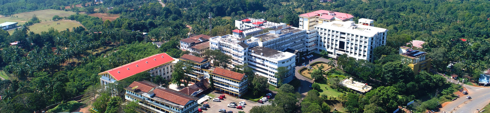

About NMAM Institute of Technology
Nitte Mahalinga Adyanthaya Memorial Institute of Technology(NMAMIT), Nitte, established in 1986 and recognized by the All India Council for Technical Education, New Delhi, is now a constituent college of Nitte (Deemed to be University), Mangaluru, since June 2022. Rank band 151-200 in the National Institutional Ranking Framework (NIRF) 2024 by Ministry of Education, Government of India, the College has been placed under ‘Platinum’ category for having high industry linkages by the AICTE-CII Survey of Industry-Linked Technical Institutes 2020. NMAMIT, the off-campus centre of Nitte DU located at Nitte in Karkala Taluk, has active collaborations with several international universities and organizations for faculty and student exchanges, research, internships and placements.
The Institute offers UG engineering program in fifteen disciplines; Artificial Intelligence & Machine Learning (AI&ML), Artificial Intelligence & Data Science (AI&DS), Biotechnology (BT), Civil Engineering(CIV), Computer & Communication Engineering (CCE), Computer Science & Engineering(CS),Computer Science (Cyber Security), Computer Science (Full Stack Development), Electrical & Electronics Engineering (E&E), Electronics & Communication Engineering (E&C), Electronics (VLSI Design & Technology), Electronics & Communication Engineering (ACT), Information Science & Engineering (IS) , Mechanical Engineering(MECH) and Robotics & Artificial Intelligence (R&AI ). Out of these programs, seven UG programs i.e., BT, CIV, CS,E&E, E&C, IS and MECH are accredited by NBA, New Delhi under Tier - I category. The institute also offers PG program M.Tech. in seven disciplines namely Construction Technology, Computer Science & Engineering,Cyber Security, Electric Vehicle Technology, Mechatronics, Structural Engineering and VLSI Design & Embedded Systems as well as the Master of Computer Applications program is accredited by the National Board of Accreditation (NBA). All the departments have qualified research guides for students interested in taking up research work leading to Ph.D.
NMAMIT is housed in a vibrant, serene and green campus at Nitte spread over 125 acres and is nestled in the Western Ghats of Southern India on the way to the Kudremukh ranges. The nearest airport is Mangaluru International Airport (45 km). The nearest railway stations are Udupi (40 km) and Mangaluru (50 km). Nitte is 19 km from NH-66 connecting Kochi (Kerala) and Panvel (Mumbai) and 7 km from NH-169 connecting Mangaluru and Solapur (Maharashtra).